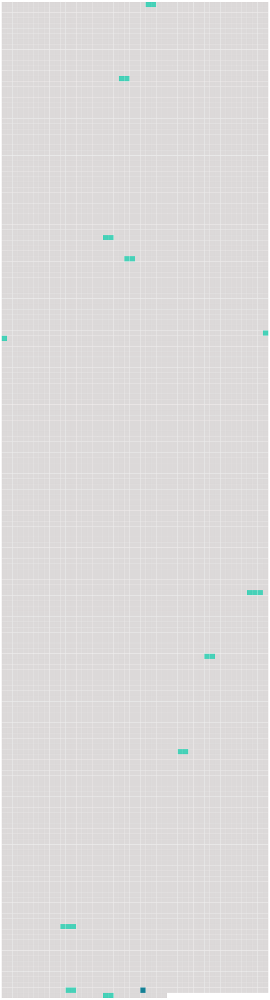

Longueur nb maillons : 12 mentions |
 |
Il retourna s’ asseoir, prit un temps, et dit avec la solennité qu’ il apportait à tous ses aphorismes : [27 phrases] Il n’ était cependant ni ivre ni stupide, le jour où il s’ engagea pour [la vie] avec elle ; et il ne subissait pas un entraînement passionné : il s’ en fallait de beaucoup. [73 phrases] Le balancier de [la vie] se meut avec lourdeur. [9 phrases] Des îles de mémoire commencent à surgir du fleuve de [la vie] [33 phrases] La chambre est un pays ; un jour est [une vie] [144 phrases]
C’ était comme s’ il avait vécu [toute une vie] , – l’ espace de quelques marches. [27 phrases] C’ étaient des considérations morales, pouvant se ramener d’ ordinaire à une pensée honnête, mais un peu connue, telle que : « Mieux vaut douceur que violence », – ou : « L’ honneur est plus cher que [la vie] », – ou : « Il vaut mieux être bon que méchant » ; – seulement, elles étaient beaucoup plus embrouillées. [27 phrases] Il lui semblait qu’ ils tenaient une place énorme dans [la vie] ; et il était surpris que son grand-père et sa mère n’ y fissent pas attention. [95 phrases] Ô délicieux souvenirs, bienfaisantes images, qui bourdonneront, comme un vol harmonieux, pendant [toute la vie] !! [40 phrases] [La vie] ne le tient pas encore ; à tout instant, il s’ [en] échappe : il nage dans l’ infini. [3 phrases]
… |
 |
La ressource peut être téléchargée sur la page Ortolang
Si vous avez des questions ou vous voyez des erreurs, merci d'envoyer un mail à silvia.federzoni89@gmail.com
Site développé par S. Federzoni (contact)